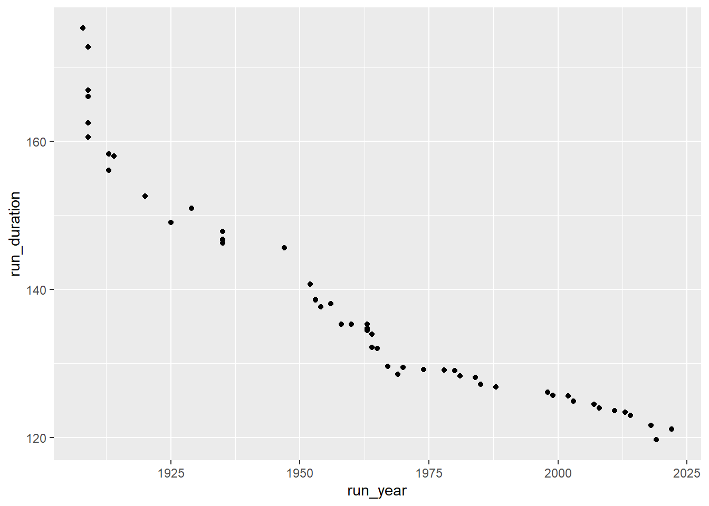
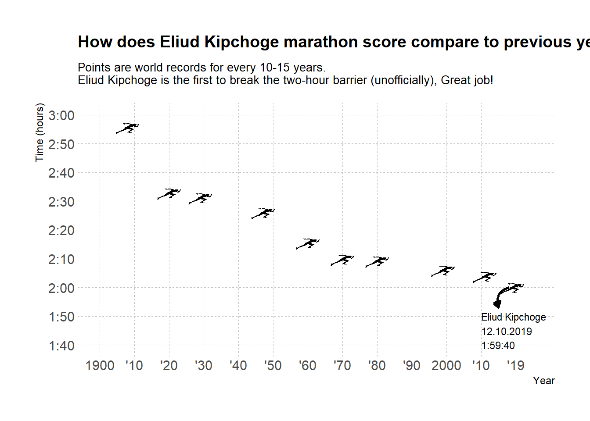

Visualizing Eliud Kichoge’s new marathon record
R
Background
On saturday October 12, 2019, Eliud Kipchoge broke (unofficially) the two-hour marathon barrier :trophy:
I saw Neil Saunders’ Twitter post visualizing the new record and wanted to try and reproduce it with runners instead of points. In this post I’ll walk through how I obtained the data from a Wikipedia page with {rvest}, wrangled and tidied it and eventually plotted it using {ggimage}.
When I initially created the plot I mistakenly took the Marathon year rankings from the Wikipedia webpage. That page showcases The yearly rankings and not the world records in general. In addition, I also changed the method of obtaining the data from first creating the plot to now. When I first did it I copied and pasted the table from Wikipedia into a .csv file and worked with that. For that specific time point, where my experience with R was extremly novice, I think it was adequate. This time around I gave scraping Wikipedia’s webpage a try which also renders a reproducible example.
Let’s start with loading the packages we’ll need:
library(tidyverse)
library(rvest)
library(janitor)
library(lubridate)
library(ggimage)
library(hrbrthemes)We’ll use {tidyverse} for tidy manipulation and plotting, {janitor} for cleaning the column names, {lubridate} for working with dates, {ggimage} for a plot with images and {hrbrthemes} for a nice quick aesthetic theme.
Retrieving data from wikipedia
In order to view the new record in comparison to other world records, We’ll turn to Wikipedia and see what we can find there.

Here we can see that the webpage contains information about marathon records, where in the screenshot we see the men section. We only want the table with men’s records, so let’s get that:
#The Wikipage we'll need
wiki_url <- "https://en.wikipedia.org/wiki/Marathon_world_record_progression"
runners_wiki <- wiki_url %>%
read_html() %>%
html_nodes(xpath='//*[@id="mw-content-text"]/div/table[1]') %>%
html_table(fill = TRUE) %>%
as.data.frame()Using the {rvest} package we are able to scrape the Wikipedia page for the table we wanted. Frankly, this is the first time I used rvest, but I found a good example from Kasia Kulma’s blog post exploring London crime with R heat maps. I used the SelctorGadget which identified the page’s content as “mw-content-text”. Using that id we looked for the tables (/div/table), specifically the first table [1] of men world records we saw earlier in figure @ref(fig:wiki-ss). Once we have the table we turn it into a dataframe for us to use.
Alternatively, you can also use the following method to extract a table by extracting all tables from the Wikipedia page and choosing the first one:
runners_wiki_alternative <- wiki_url %>%
read_html() %>%
html_table(fill = TRUE) %>%
.[[1]]This option extracts all table from the html page using html_table(). Using this on the whole page parses the html tables into data frames nesting within a list object. Like before, {rvest} makes it easy for us and if the tables have inconsistent number of values it requires (or demands?) us to fill them. Once we have the tables in a list object we can extract the one we need using .[[1]]. The . acts as a place holder for the previous object passed, here a list of tables we scraped. The [[1]] following that calls for the first object within the list, but in the form of its core class - tbl_df, tbl, data.frame. If we’d use one square bracket [1] it would return an object with the original class from which it was drawn, in this case a list which is not good for us here since we want it as a dataframe to continue our data preparation.
Warngling the Data
Let’s look at our table to see what we have and what we’ll need to do:
head(runners_wiki, n = 3) Time Name Nationality Date
1 2:55:18.4 Johnny Hayes United States July 24, 1908
2 2:52:45.4 Robert Fowler United States January 1, 1909
3 2:46:52.8 James Clark United States February 12, 1909
Event.Place Source
1 London, United Kingdom IAAF[52]
2 Yonkers,[nb 5] United States IAAF[52]
3 New York City, United States IAAF[52]
Notes
1 Time was officially recorded as 2:55:18 2/5.[53] Italian Dorando Pietri finished in 2:54:46.4, but was disqualified for receiving assistance from race officials near the finish.[54] Note.[55]
2 Note.[55]
3 Note.[55]A little messey but that’s OK. What we’ll need to visualize Eliud Kipchoge’s record is the Name, Time and Date of all runners. We’ll start with cleaning our data:
runners_clean <- runners_wiki %>%
clean_names() %>%
select(1,2,4)
str(runners_clean)'data.frame': 51 obs. of 3 variables:
$ time: chr "2:55:18.4" "2:52:45.4" "2:46:52.8" "2:46:04.6" ...
$ name: chr "Johnny Hayes" "Robert Fowler" "James Clark" "Albert Raines" ...
$ date: chr "July 24, 1908" "January 1, 1909" "February 12, 1909" "May 8, 1909" ...The clean_names function cleans the column names making them easier to use. I then picked the columns we’ll need using select. Lastly, we want to look at the variables structure to see if we they need any manipulations. Yes, it seems both the time and date are not recognized appropriately (In this case they’re characters) - let’s fix that:
runners_mutate <- runners_clean %>%
add_row(time = "1:59:40", name = "Eliud Kipchoge", date = "November 12, 2019") %>% mutate(run_period_raw = hms(time),
run_duration = as.numeric(run_period_raw, "minutes"),
run_year = year(mdy(date))) %>%
select(c(-date,-time))Warning: 1 failed to parse.Let’s see what we did here. First I add Eliud Kipchoge’s new unofficial record as an observation into our dataframe. I then turned to the {lubridate} package where I used the hms function to mutate the time variable we had into a new variable called ‘r_period_raw’. Although this cleans the variable, hms transforms it into a period object which I found a little difficult to use when we want to plot. What we need is to turn it into a numeric class which we did in our new variable ‘run_duration’. This will help us in plotting but I retained the period class variable as it makes it easier to read in this case.
I then turned the date column into a Month-Day-Year variable using the mdy function, which eventually I only extracted the year using year. Lastly I discarded the old columns we don’t need anymore. We also recieved a warning sign that one observation didn’t parse. This was because the value in the cell didn’t match the pattern of the hms fuction. The original pattern looked like this: May 8, 1909[nb 6]. All we want is the specific year which we’ll probably anyway filter later so it’s no big deal, but let’s go ahead and manually add it if we decide to use it later:
runners_mutate[5,4] <- 1909This brings us the following:
ggplot(runners_mutate,aes(x = run_year, y = run_duration))+
geom_point()
Great, that’s a good start. Now we want to make it a little less crowded so we can easily insert an image of runners instead of points and not have it cluttered. In order to do that we’ll look at each several years and lastly at 2019, the current record. First, let’s look at the years we have:
runners_mutate %>%
pull(run_year) [1] 1908 1909 1909 1909 1909 1909 1913 1913 1914 1920 1925 1929 1935 1935 1935
[16] 1935 1947 1952 1953 1953 1954 1956 1958 1960 1963 1963 1963 1964 1964 1965
[31] 1967 1969 1970 1974 1978 1980 1981 1984 1985 1988 1998 1999 2002 2003 2007
[46] 2008 2011 2013 2014 2018 2022 2019Using the pull function we were able to extract the column we wanted, much similar to using the runners_mutate$column_name approach. ‘Unfortunately’, we can’t filter exactly by round intervals (for example every exact 10 years) so we’ll create a vector with specific years to filter by. Although it might sound trivial, make sure you’re assigning years that are observed in your data set, otherwise it’ll filter only by the years you do have and not those you don’t.
year_sub <- c(1908, 1920, 1929, 1947, seq(1960,1980,10), 1999, 2011, 2019)Here we created a vector with values for every 15+- years. Now we can filter our new dataframe according to the years we want:
runners_mutate <- runners_mutate %>%
filter(run_year %in% year_sub)Using the filter function with %in% we discard anything from the run_year column that’s not in the year_sub vector. I find %in% facsinating and extremely helpful when you want to look/filter several parameters. Basically, you can read it as “Keep all rows in ‘run_year’ that match values in ‘year_sub’”.
Plot
ggimage
In order for us to plot a runner icon instead of points we need to load the images into our data frame as values for each observation. To do that we use the {ggimage} package which we’ll also use for the plot.
runners_mutate <- runners_mutate %>%
mutate(run_image = "run.png")And now let’s look at our new plot:
g <- ggplot(runners_mutate, aes(x = run_year, y = run_duration))+
geom_image(aes(image = run_image), size = 0.05)+
theme_ipsum_rc()
g
Not bad. I like the icons although the whole graph might be a bit misleading if readers perceive that these are the only records there are. However, this is a tutorial and we’ll also add that note into our plot momentarily. You can adjust the size and other parameters of the images we plot, here for example I chose to adjust the size from its default. I also added theme_ipsum_rc from the {hrbrthemes} package for a quick aesthetic theme I like.
Plot Aesthetics
So the plot so far looks nice, but we want it to be aesthetic and also to easily understand the progress of records across years. In order to do that, let’s turn to adjust both the y and x axis, and following that add some information to understand what we’re looking at:
g1 <- g +
scale_x_continuous(name = "Year",
limits = c(1900,2025),
breaks = seq(1900,2020,10),
labels = c("1900", paste0("'", seq(10,90,10)),"2000",
"'10","'19"))Here we added some nice x labels in a format that’s both concise and informative. I remember taking this from Liam Bailey’s #Tidytuesday plot a while back when i first made this visualiztion. What we did was teak the scale_x_continuous by assigning a name to the axis, expanding its limits, added specific breaks and then a label for each break using paste0. Note that you must have the same number of labels and breaks for the plot to render so it’s important to have the sequences identical in length; otherwise it’ll return an error. With the paste0 we can add any value or observation and then ‘stick’ to it whatever else we want. Using that we are able to create years in the format of ’10 and so on. It is also possible to use the {glue} package which I heard is very intuitive, maybe next post I’ll give that a try.
Next, let’s change our y duration axis:
g2 <-
g1 + scale_y_time(name = "Time (hours)",
limits = c(100,180),
breaks = seq(100,180,10),
labels = c("1:40","1:50", "2:00", "2:10","2:20","2:30","2:40", "2:50", "3:00"))If you recall, we previously mutated the column we read from Wikipedia into a period class and a duration of minutes. using the scale_*_time (either x or y instead of *) we can work with an hms object. What we did is add a name, expand a little the limits, add breaks and labels same as before. This time around we used our breaks as minutes, so every 60 minutes represents an hour. I initially used hours as the numeric value, but then it makes it harder to break every 10 minutes (that’ll mean breaks every 0.166…). For the labels I was having some problems automating it so I comprimised on manually inputting it; I guess sometimes you just have to choose your battles between automating and manualy inserting.
Let’s finish up by adding a title, subtitle and integrating last aesthetics to our plot.
g3 <- g2 +
labs(title = "How does Eliud Kipchoge marathon score compare to previous yearly records?",
subtitle = "Points are world records for every 10-15 years. \nEliud Kipchoge is the first to break the two-hour barrier (unofficially), Great job!")+
theme(
panel.grid.minor = element_blank(),
panel.grid.major = element_line(colour = "gray75", size = 0.1, linetype = "dashed"),
plot.title = element_text(size = 14),
plot.subtitle = element_text(size = 10)
)After adding some labs I tweaked a bit the gridlines using panel.grid minor or major. You can play around with them to see which minimilize your plot in the perfect way. I chose to leave the major grid lines since I find it easier to read the values with them. Although we defined a theme earlier on we can still tweak it by adding another theme argument to the previous one as we just did.
Final annotation
Lastly, we want the new record to be evident and stand out in a first glance. Here I was somewhat debating between using a regular geom_point instead of the geom_image because then we could easily use a vertical line to highlight the 2:00 hour threshold. Since a line in this case will cut right through the icon, let’s use an arrow annotation instead.
g4 <- g3 +
geom_curve(aes(x = 2018, y = 120, xend = 2015, yend = 113),
colour = "black", size = 0.9, curvature = 0.5,
arrow = arrow(length = unit(2,"mm"), type = "closed"))+
annotate("text", x=2010, y= 105,
label = "Eliud Kipchoge\n12.10.2019\n1:59:40",
color = "black", size = 3, hjust = 0)
g4
And voila!
In our final touches we added both an arrow and text to explain what we’re seeing. I decided to go with a geom_curve arrow where we can set the start and end of the arrow along with the kind of curve we want. We then set the curve to be arrow and adjust its length. You can also use a closed head arrow, for more on that read on ?arrow as part of the geom_curve or geom_segment you can use here.
That’s it, seems like were good to go. Great job for Elihud Kipchoge :clap:
Appendix
- When I initially created this visulization I was just starting with
R. I first created 11 slots, added 1921, the sequence of 1930-2010 and then a 2019 (reminder: When I first created this viz I took a different dataset altogether). Little did I know how to properly use thec()function that we used in the current post.
year.sub <- vector ("double", 11)
year.sub[1] <- 1921
year.sub[2:10] <- seq(1930,2010,10)
year.sub[11] <- 2019